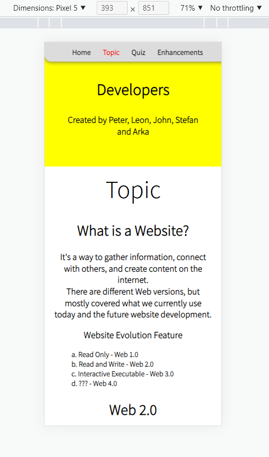
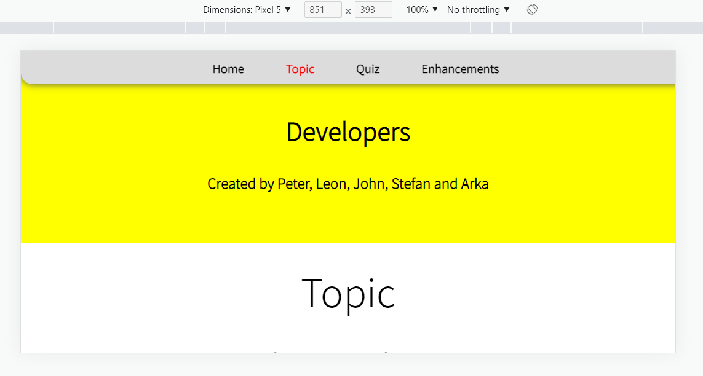
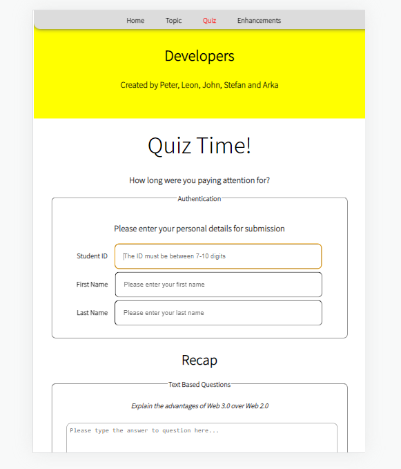
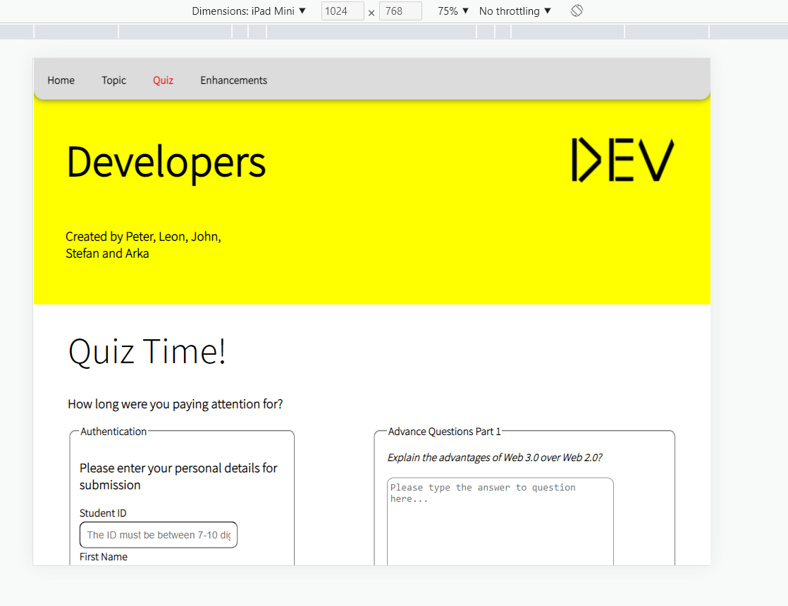
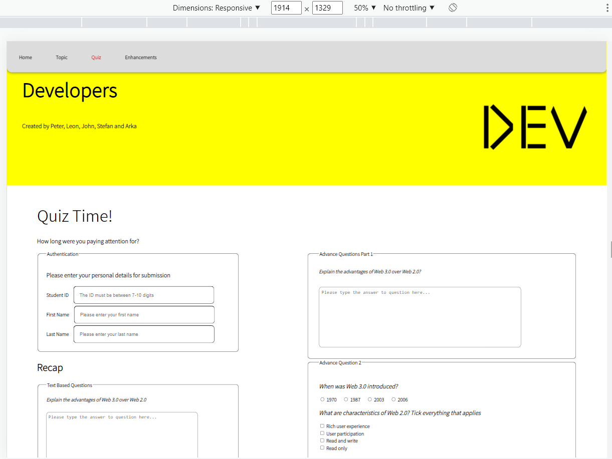
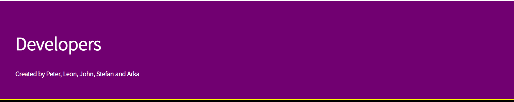
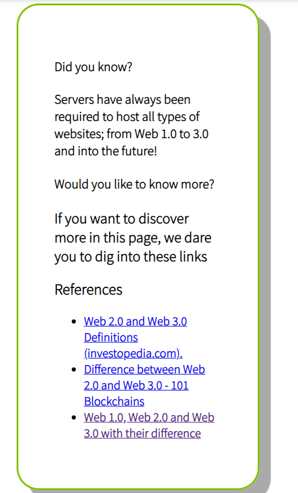

This page will explain all the extensions and enhancements that have been applied to the project. A reference has been given for each point
Key Enhancements
Mobile Optimized and Fluid/Responisve design
If you change the device or change the size of the webpage then you are able to see the webpage in different sizes and so it has been optimized to look amazing for all devices, using flex boxes, grids and media queries and a separate stylesheet dedicated for the mobile and tablet webpages.
Mobile - Portrait Mode

The following website viewed through a smartphone on portrait modeMobile - Landscape Mode

The following website viewed through a smartphone on landscape modeTable - Portrait Mode

The following website viewed through a tablet on portrait modeTablet - Landscape Mode

The following website viewed through a tablet on landscape modeResponsive Mode

The following website viewed through responsive mode
CSS animation
Have used animation using keyframes to change the style of the webpage over time and to improve user interface
Animation Examples

The color of the animation changes over time and loops infinitely

The color of the border changes over time and loops infinitely, this is to encourage people to see the aside content